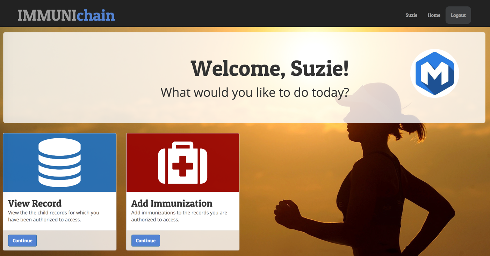
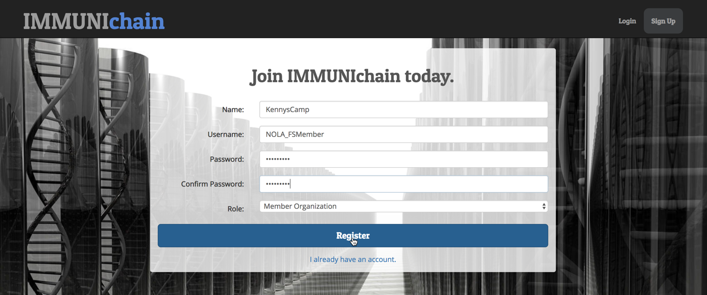
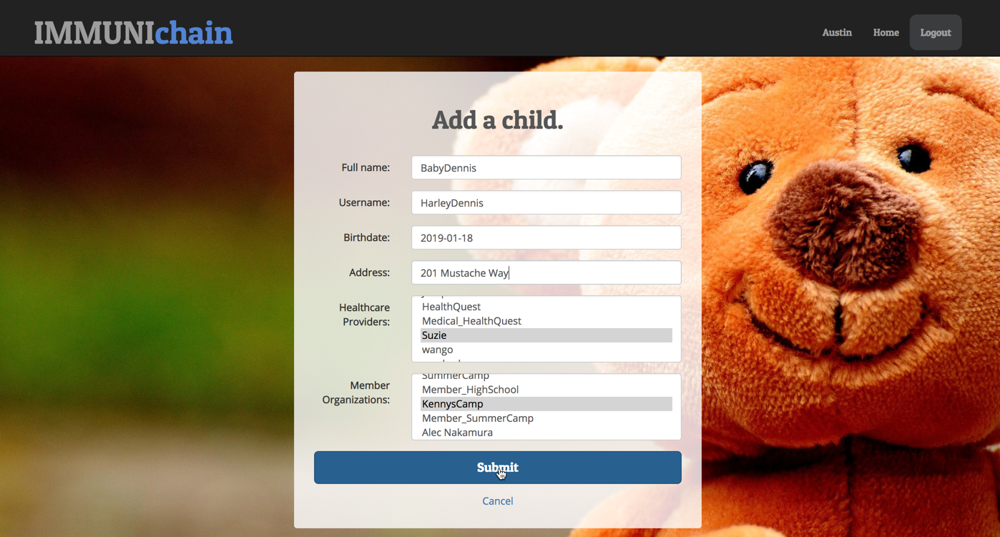
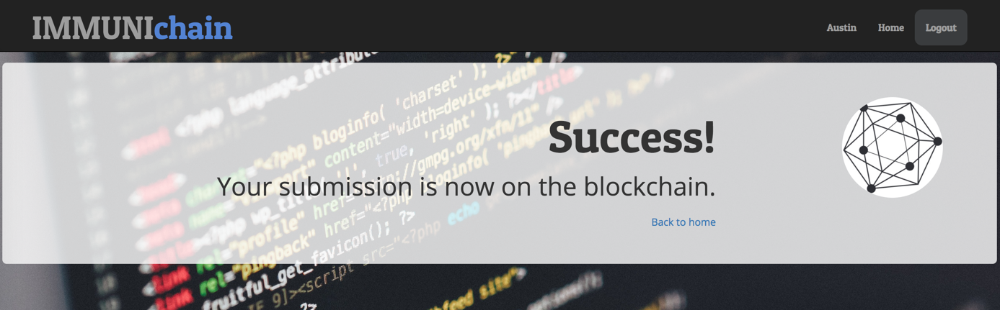
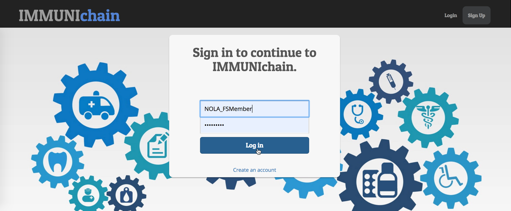
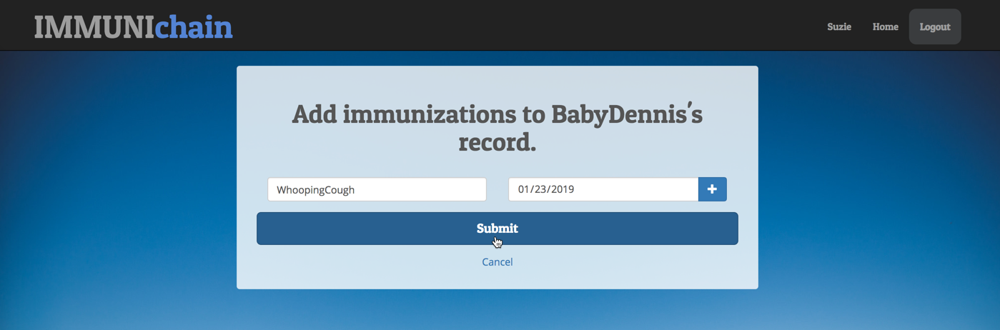
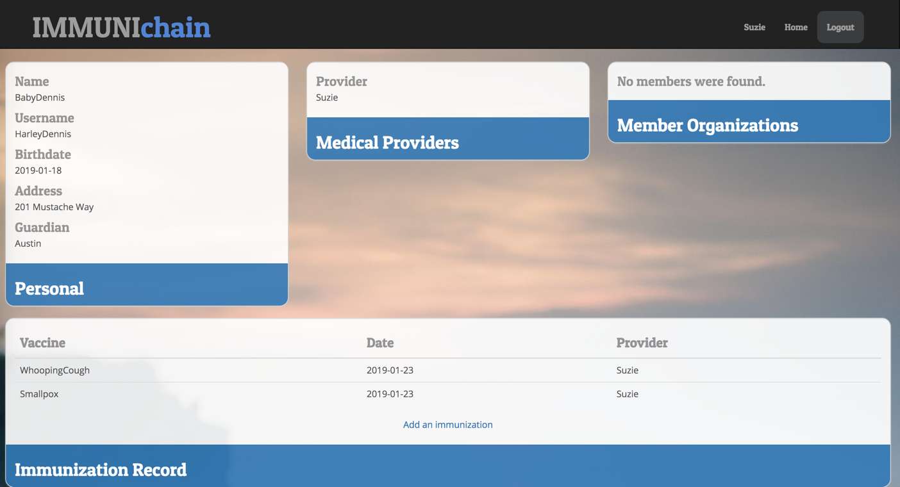

Part 1: Immunichain Walk Through
Section 1: Create your Participants & Child
1. Begin by going to the Immunichain UI below:
https://immunichain.zcloud.marist.edu/login/
2. Click on Create an account
3. You will be prompted to fill out a profile for your participant. In
the Role field, select your participant (Guardian, Healthcare
Provider and Member Organization). Based on your role, fill out the
rest of the information.
NOTE: You will want to make your profile specific to you. As everyone is creating their participant, it is being inserted into one database. By the time you create your participants, there could be multiple medical providers and member organizations. If you make them specific to you, you will know which medical provider and member organiation to assign to your child.
Here is my guardian:

4. Once you have successfully created a guardian, you will be welcomed with the guardian's homepage

5. Once you have looked through the available options for our guardian,
you can click on logout in the top right
6. Once you are on the Immunichain homepage, you can click on
Create an account once more. This time, make a healthcare provider
Here is my healthcare provider:

7. Once you have made your healthcare provider, you will be graced with its profile

8. Once you have looked through the available options for our
healthcare provider, you can click on logout in the top right
9. Once you are on the Immunichain homepage, you can click on
Create an account once more. This time, make a member organization
Here is my member organization:

10. Once you have made you member organization, you will be greeted with its profile

11. Look through the available options for our member organization. Once
you are finished, you can click on logout in the top right
Section 2: Create a Child and Grant Access
1. You should be on the Immunichain homepage. If you are log into your
guardian

2. Once you get to your guardian's profile, scroll down and click on
Continue of Add a Child
3. Fill out the information for our hypothetical child and choose the healthcare provider and member organization that you created
NOTE Remember how I said - at the beginning - that there would be multiple healthcare providers and members to choose from, you now know why I said to make the participants specific to you.

4. Click on Submit once you have filled out your child's information

5. Click on return home and that should take you back to the
guardian's profile. Now that you think you have create a child, you
can confirm by click on Continue of View Record
6. Select our new child and click on Continue
7. You should now see all the information you just filled in for our child

8. You will notice that we have already granted access for our healthcare provider, Suzie, and then our member organization, KennysCamp.
If you did not grant access for our other participants when creating the
child, you will see blank information in the Medical Providers and
Member Organizations section. You can change that by going to the
guardian's profile and then click on Authorize Member or
Add Medical Provider
Section 3: Add Immunizations
1. Navigate your way back to the Immunichain homepage. Once you are there, log into our member organization

2. Click on Continue of the View Record tile
3. You should only see the children in which we have access to - in
this case, it should only be BabyDennis

4. Click on Continue and you should see all of Dennis's information

5. You will notice, that there are no immunization shots on Dennis's record. Let's change that. We can do that by logging out of our Member and then logging into our Healthcare Provider

6. Once you get to the medical providers homepage, click on Continue
of Add Immunization. Then select our child, Dennis.
7. You should now be on the screen to add immunizations for Dennis. Go ahead and give Dennis an immunization shot with today's date

8. Go ahead and click on Submit to add this immunization shot. Once
you have done that, you will should see a Success message

9. Now that we have successfully added an immunization shot, we can see if our member can see it on their end. You can do that by logging out of the healthcare provider and then logging into our member.
10. Once you are on the member's profile, you can click on Continue
of the View Record tile and selecting Dennis.
11. Now that we have selected Dennis, you can see see the updated information of Dennis's immunization shot

12. Imagine if you were a SummerCamp or another member participant that needs childrens medical shot record. Doing this digital increases the accuracy of the data due to the healthcare provider inputting the data right when the shot was administered. Additionally, this will allow them to increase their efficency of approving children into their camp, for example.
Now if you were a guardian and a summer camp already approved your child, we would want to revoke that member from seeing our child's immunization record. How do we do that? We will do exactly that in the next section.
Section 4: Revoking Access
1. Navigate back to Immunchain's homepage and log into the Guardian's profile
2. Click on Continue of the Deauthorize Member tile
3. Select Dennis as our child and then select our Member, KennysCamp, as the one we revoking access to

4. You should get a Success message once click on Submit of the
revoking our member

5. Now, log out of our guardian and log into our medical provider
6. Once in the medical provider's profile, click on Continue of the
Add Immunization tile
7. Select our child, Dennis, and then add another immunization to his record

8. Once you get the Success message, click on Back to Home.
9. You should still be in the guardian's profile. Since you are, click
on Continue of the View Record tile. Then select our child,
Dennis. You should then see Dennis's updated immunization record

10. Log out of our medical provider and then log into our member, KennysCamp.
11. Click on Continue of the View Record tile. You should see the
message of: You do not have any children. This means the
KennysCamp can't view Dennis's immunization record anymore.

Optional: If you want to grant KennysCamp as a member again, you can go
back into the guardian's profile. Once there, you can click on
Continue of the Authorize Member tile. Then you can grant KennysCamp
as an authorized member for Dennis. Now if you go back to KennysCamp,
click on Continue of the View Record tile and you should see the
updated information for Dennis.

End of Lab